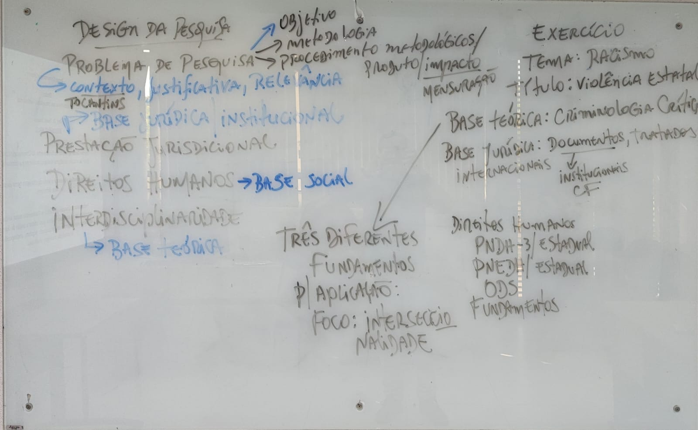

Normas, atos e documentos do Judiciário e das instituições: Constituição, tratados, resoluções do CNJ, atos dos tribunais.
Leitura do quadro da aula
O que o professor escreveu no quadro, transcrito e explicado para quem não esteve na aula. À esquerda do quadro está o modelo geral de um projeto de pesquisa. À direita, um exercício que aplica esse modelo ao tema do racismo.

DESIGN DA PESQUISA
PROBLEMA DE PESQUISA ──→ Objetivo
──→ Metodologia
──→ Procedimentos metodológicos / Produto / Impacto
└─ Mensuração
↳ Contexto, Justificativa, Relevância (Tocantins)
↳ Base jurídica institucional
PRESTAÇÃO JURISDICIONAL
DIREITOS HUMANOS ──→ Base social
INTERDISCIPLINARIDADE
↳ Base teórica
O problema de pesquisa é o centro do projeto. Todo o resto sai dele ou serve para sustentá-lo.
Ponto que o professor destacou: ele sublinhou “impacto” e escreveu “mensuração” embaixo. Não basta afirmar que a pesquisa terá impacto. É preciso dizer como ele será medido, com indicadores. Essa exigência é típica de programas interdisciplinares e profissionais, que pedem um produto técnico aplicável.
As setas azuis ligam cada eixo do programa a um tipo de base. O projeto precisa articular as três ao mesmo tempo.
Normas, atos e documentos do Judiciário e das instituições: Constituição, tratados, resoluções do CNJ, atos dos tribunais.
A realidade social do problema: os sujeitos afetados, as vulnerabilidades, as políticas públicas de direitos humanos.
Um referencial teórico que faça dialogar áreas diferentes, como Direito, Sociologia, Criminologia e Ciência Política.
EXERCÍCIO
Tema: Racismo
Título: Violência estatal
Base teórica: Criminologia Crítica
Base jurídica: Documentos, tratados internacionais
↓
institucionais, CF
Direitos Humanos:
PNDH-3 / estadual
PNEDH / estadual
ODS
Fundamentos
(seta saindo de “Base teórica” →)
TRÊS DIFERENTES FUNDAMENTOS
p/ APLICAÇÃO:
FOCO: INTERSECCIONALIDADE
A seta que sai da base teórica leva à ideia central do exercício. A pesquisa trabalha com três fundamentos diferentes, e eles precisam convergir na aplicação. O que os une é uma categoria de análise, que neste exemplo é a interseccionalidade.
Interseccionalidade é o conceito formulado por Kimberlé Crenshaw e desenvolvido no Brasil por autoras como Lélia Gonzalez e Carla Akotirene. Aplicado ao exercício, significa analisar a violência estatal onde raça se cruza com gênero, classe e território, e não olhar para cada uma dessas dimensões separadamente.
Juntando os dois lados do quadro, o professor espera que cada um consiga preencher esta estrutura para o próprio tema:
| Pergunta | Onde isso aparece no projeto |
|---|---|
| O problema está situado no Tocantins? | Contexto e justificativa |
| Há normas e instituições que sustentam o problema? | Base jurídica institucional |
| Quem são os sujeitos afetados e quais políticas de DH se aplicam? | Base social |
| A teoria faz dialogar mais de uma área? | Base teórica |
| Existe uma categoria que une as três bases? | Foco de análise |
| O impacto tem indicador? | Produto, impacto e mensuração |